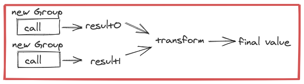

Groups¶
Note
Be sure you have followed the instructions in Setup for importing dependencies before running examples.
Stitch Groups are the main APIs that customers will want to implement to make their service’s endpoints usable with Stitch. For most Stitch customers who are calling services there will already be a Group for each batch endpoint provided by the service owner.
Groups are used to batch and perform RPCs to other services. There are 2 main classifications of Groups, Map and Seq. Map groups are for APIs that return key-value mappings while Seq groups are for APIs that return a Seq of results in the same order as the input. For both of these Groups, keys are de-duplicated by equality.
Focusing on the existing Seq and Map groups, there are only a few things that need to be configured in order to make a Group to take advantage of batch endpoints in a service.
run is an implementer-defined function from Seq[Key] to either Future[Seq[Try[Value]]] or Future[Key => Try[Value]]. This is generally just a call to a service’s batch endpoint. Stitch manages the size and concurrency for you so the run function only has to worry about making the actual RPC.
maxSize configures the max number of keys in a single RPC
maxConcurrency configures the max number of in-flight requests for each Stitch.run.
When a Group is used by Stitch, the Stitch Runners ensures that the Seq[Key] passed into the Group.run method is at most maxSize. Stitch also ensures that there are at most maxConcurrency pending Futures returned by run. In other words, run will be called only when the maxConcurrency allows it to be called, and will be given a Seq[Key] of the configured size.
Below are some examples of Groups with placeholder code for performing an RPC. The first example is a Group that simply adds 1 to each input value, this could be replaced with any Future returning code though, such as a task scheduled with a timer.
val g = new SeqGroup[Int, Int]{
override val maxSize = 10
override val maxConcurrency = 10
override def run(keys: Seq[Int]): Future[Seq[Try[Int]]] = {
// any code that takes in a Seq[Int]
// and returns a Future[Seq[Try[Int]]
Future.value(keys.map(i => Return(i + 1)))
}}
Await.result(Stitch.run(Stitch.call(0, g))) // result: 1
In the next example we’ve pulled out the Future code into performNonBatchedRpc which would be similar to accessing an existing client with a non-batch API that returns a Future. Even though this example endpoint isn’t batched, it may still be beneficial to use a Group instead of just utilizing callFuture because it can increase batching performance of later calls. An example of timing differences resulting in different batching behaviors can be seen in the second example in the Ordering section.
def performNonBatchedRpc(i: Int): Future[Try[Int]] = {
Future.value(i + 1).liftToTry
}
val g = new SeqGroup[Int, Int]{
override def run(keys: Seq[Int]): Future[Seq[Try[Int]]] = {
Future.collect(keys.map(performNonBatchedRpc))
}}
Await.result(Stitch.run(Stitch.call(0, g))) // result: 1
The last example is the most typical type of Group. Typically a Group is used to ensure batching to backends, so it will be used to make RPCs to batched endpoints. performBatchedRpc would be similar to accessing an existing client with a batch API that returns a Future.
def performBatchedRpc(s: Seq[Int]): Future[Seq[Try[Int]]] = {
Future.value(s.map(i => Return(i + 1)))
}
val g = new SeqGroup[Int, Int]{
override def run(keys: Seq[Int]): Future[Seq[Try[Int]]] = {
performBatchedRpc(keys)
}}
Await.result(Stitch.run(Stitch.call(0, g))) // result: 1
We can do all the same things with a MapGroup as we can with a SeqGroup as well.
def performBatchedRpc(s: Seq[Int]): Future[Int => Try[Int]] = {
Future.value(s.zip(s.map(i => Return(i + 1))).toMap)
}
val g = new MapGroup[Int, Int]{
override def run(keys: Seq[Int]): Future[Int => Try[Int]] = {
performBatchedRpc(keys)
}}
Await.result(Stitch.run(Stitch.call(0, g))) // result: 1
When using Groups, you should use equal Group instances (e.g. the same instance, or if the Group is a case class then it has the same input arguments) for all calls to a given backend. This is part of why Service Adapters often hide the Group, since the implementer can ensure that the correct Group is used. Stitch batches requests by aggregating all calls to a specific Group, so in order to batch across calls, those calls must have equal Groups. If you don’t, then no batching will occur. This means doing something like this which will batch into a single RPC:
val g: Group[Int, Int]
Stitch.join(
Stitch.call(0, g),
Stitch.call(1, g))

Stitch.join(
Stitch.call(0, new Group{}),
Stitch.call(1, new Group{}))
but doing something like this won’t batch:
Next Service Adapters